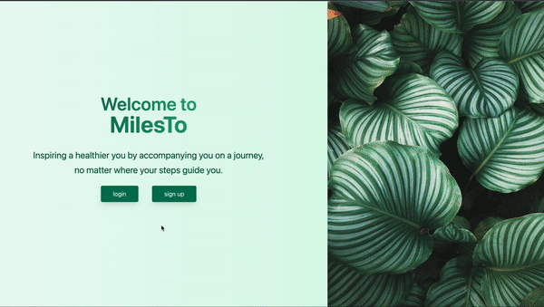
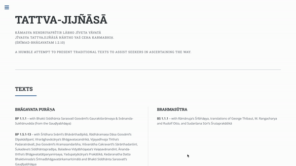

About Me
Greetings! I'm Vanya, and I'm here to transform your ideas into reality.
My journey into the world of programming began during my undergraduate studies, but it was during the pandemic that I stumbled upon my true passion for coding. What started as a mere curiosity turned into a profound fascination, as I began experimenting with various small-scale projects to occupy my time. This seemingly modest endeavor evolved into something much greater, ultimately propelling me into the realm of software engineering.
The pandemic's impact made me realize the importance of helping local businesses thrive online. Web accessibility is key to business growth, and I'm committed to helping you succeed.
So, let's embark on this journey together. With my expertise and your vision, we can navigate the digital landscape and help your business flourish.
My Work
Miles To

As someone who is now living in NYC, I thought it would be extremely fascinating to be able to tally up all the miles I have ever walked in the last few months. Unfortunately, I was not able to find any existing application that had this functionality. This is how the idea for MilesTo was created! MilesTo is a MERN application encouraging you to reach your daily step goals. This application gives you insight into
the overall metrics on how many miles you have walked in the last month, or even the last year all at the click of a button!
TATTVA-JIJÑĀSĀ

Here is a probono website I created for a NYC-based nonprofit organization. https://tattvajijnasa.com is a minimalistic website providing commentaries on various ancient Sanskrit texts by different teachers in one place. The author of this website is still working on more Sanskrit texts to publish and they will be added gradually.
Through Space

Ever since I was a child, I've had a deep fascination with observing and tracking celestial events in outer space. One
of my earliest birthday gifts was a pair of binoculars, which allowed me to appreciate the planets in the night sky.
Creating Through Space became a meaningful way for me to not only share my passion with others but also to expand my
knowledge of celestial phenomena. By utilizing NASA's APOD API, users can input specific
dates to retrieve historical content, view stunning images, and learn about various celestial events and phenomena.
Get In Touch